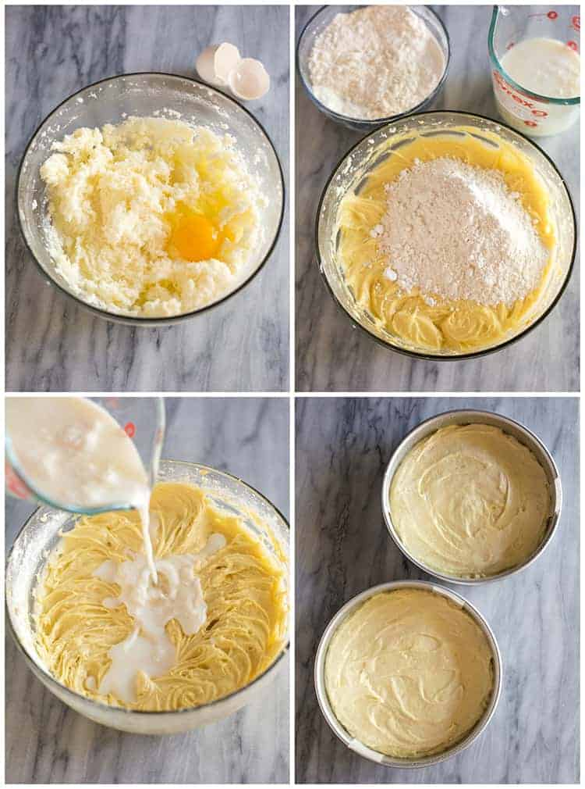
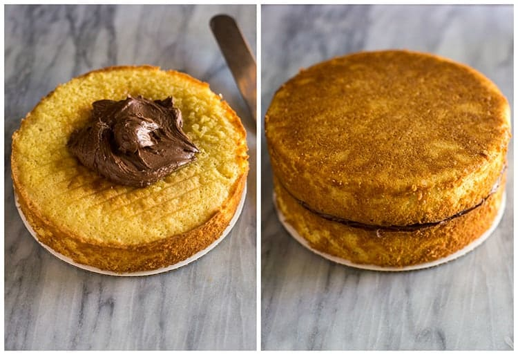
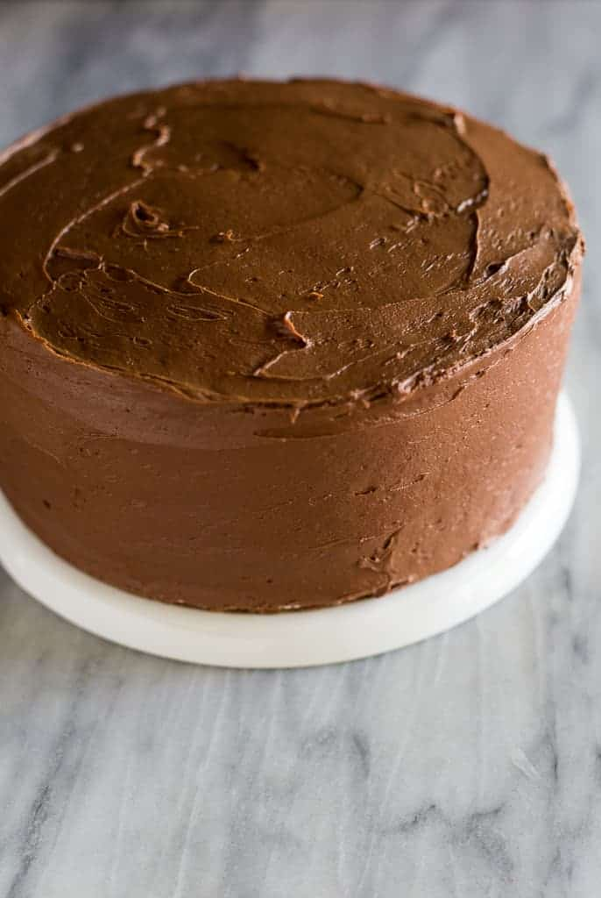

Ingredients
For the Yellow Cake:
- 3/4 cup unsalted butter , at room temperature
- 1/4 cup oil
- 2 cups granulated sugar
- 3 large eggs , at room temperature
- 2 large egg yolks , at room temperature
- 1 Tablespoon vanilla extract
- 2 1/2 teaspoons baking powder
- 1 teaspoon salt
- 2 2/3 cups all-purpose flour
- 1 cup buttermilk , at room temperature
For the Chocolate Frosting:
- 1/2 cup butter melted
- 2/3 cup unsweetened cocoa powder
- 3 cups powdered sugar
- 1 teaspoon vanilla extract
Instructions
For the Yellow Cake:
- Preheat oven to 350 degrees F
- Place parchment paper in the bottom of two 8 or 9 inch round cake pans. Cut the paper so it fits well in the bottom circle of the pan. Spray the pan and parchment paper with nonstick cooking spray.
- In a large bowl, cream sugar and butter until smooth. Add oil and mix
- Add the eggs and yolks, one at a time, beating after each addition. Add vanilla and mix.
- Stir together baking powder, salt, and flour in a medium bowl.
- Alternate adding in some of the flour mixture, stirring to combine and then some of the buttermilk, ending with the flour mixture until just combined. Divide the batter evenly in the pans.
- Bake for 25-35 minutes or until a toothpick inserted into the center of the cake comes out with few moist crumbs, but not wet batter. Don't over-bake or the cake will be dry.
- Allow the cake to cool for a few minutes before inverting onto a wire cooling rack to cool completely.
For the Chocolate Frosting:
- Stir together the butter and cocoa powder.
- Use electric mixers or a stand mixer to beat in the powdered sugar, milk ,and vanilla until light and fluffy. I beat the frosting for several minutes.
- Once the cake has cooled completely, frost with chocolate frosting.
- Tips for making ahead and freezing the cake are above in the post.
Homemade:
How to make Yellow Cake:
- Prepare your cake pans: Place parchment paper in the bottom of two 9 round cake pans. Cut the paper so it fits well in the bottom circle of the pan (I use these handy parchment liners). Spray the edges of the pan and parchment paper lightly with nonstick cooking spray.
- Combine wet ingredients: In a large bowl, cream together the sugar and butter for several minutes until light and fluffy. Add the oil and mix. Add the eggs and yolks, one at a time, beating after each addition. Add vanilla and mix. 
- Combine dry ingredients: Stir together baking powder, salt, and flour in a medium bowl. Alternate adding in some of the flour mixture, stirring to combine and then some of the buttermilk, ending with the flour mixture until just combined. Divide the batter evenly in the pans.
- Bake: Bake at 350 degrees F. for about 25 minutes or until a toothpick inserted into the center of the cake comes out clean or with few crumbs. Don't over-bake or the cake will be dry.
How to make Chocolate Frosting from scratch:
- Stir together the melted butter and cocoa powder.
- Beat in the powdered sugar, milk, and vanilla until light and fluffy, about 3 minutes. To frost the cake, place one baked and cooled cake layer on your serving plate or cake stand. Add a generous spoonful of chocolate frosting on top and smooth into an even layer. 
- Add the second cake layer on top. I like to place it so the bottom, flattest side, is facing up, so that the top of my cake is completely flat.
- Frost the top and sides of the cake. Leave a little extra frosting in the bowl for piping an edge around the cake, if desired. 
Notes
- You can use salted butter, just reduce the amount of salt added to the batter.
- You can substitute all butter if you want, instead of the oil, but I found the oil and butter combination yields a moister cake.
Nutrition
| Calo: 464kcal | Carbohydrates: 66g | Protein: 5g | Fat: 20g |
| Saturated Fat: 10g | Cholesterol: 102mg | Natri: 233mg | Kali: 186mg |
| Fiber: 1g | Sugar: 48g | Vitamin A: 565IU | Canxi: 71mg |
| Iron: 1,8 mg |